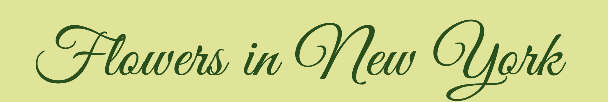

The goal of this project was to show and give information on the flowers that bloomed here in New York ❃
I chose to do a collection of flowers in New York because it as the beginning of spring and also being here in the city, it can become overwhelming at times so stopping and looking at plants can be therapeutic.
I started off taking picture of flowers that I see as I am walking through the city. Then I used a plant indentifier app called Picture This and documented information about the plant like the name, botanical name, where they originated from, etc.
For the Title of collection I chose Great Vibes as the typeface because I wanted it to fit the floral vibe and also fun. A cursive tyoe face seemed to be the best option since it can seem like vines and the stem of the flowers.

For the information portion I chose Cormorant because it went well with the type face of the title and it is more legible as well.
I brought the focus to seperating them into categories which were all, native, and nonnative. I waanted something simple and with pastel colors to fit the spring and happy vibe. Putting the pictures and information in a grid made it more organized and giving the categories different colors (and flowers) made it look more clear. And so I ended up with something like this: